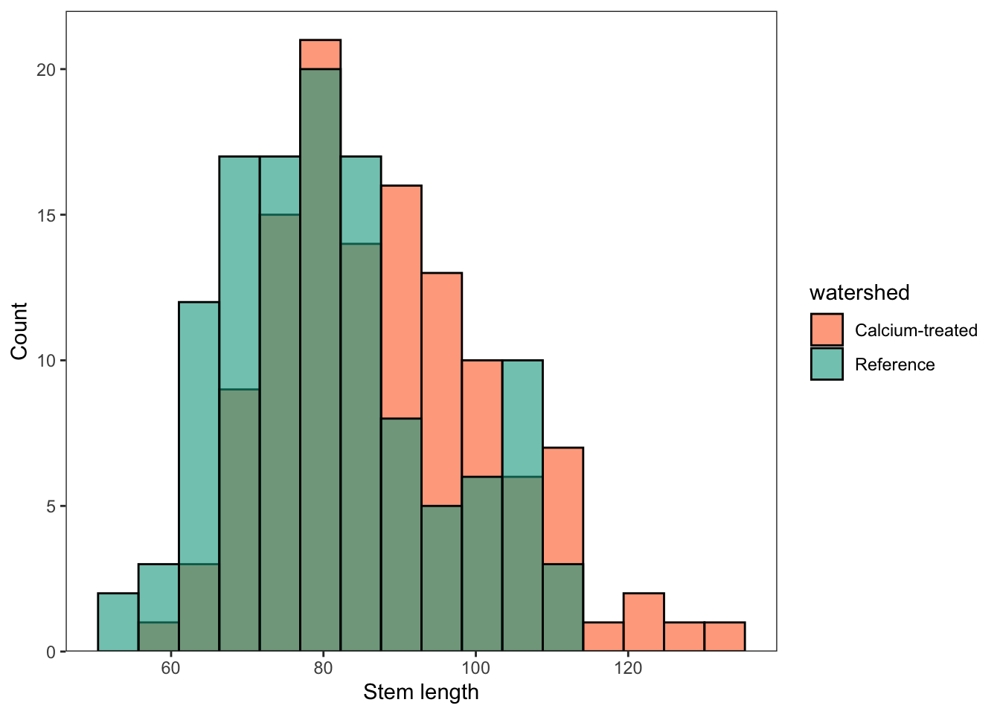
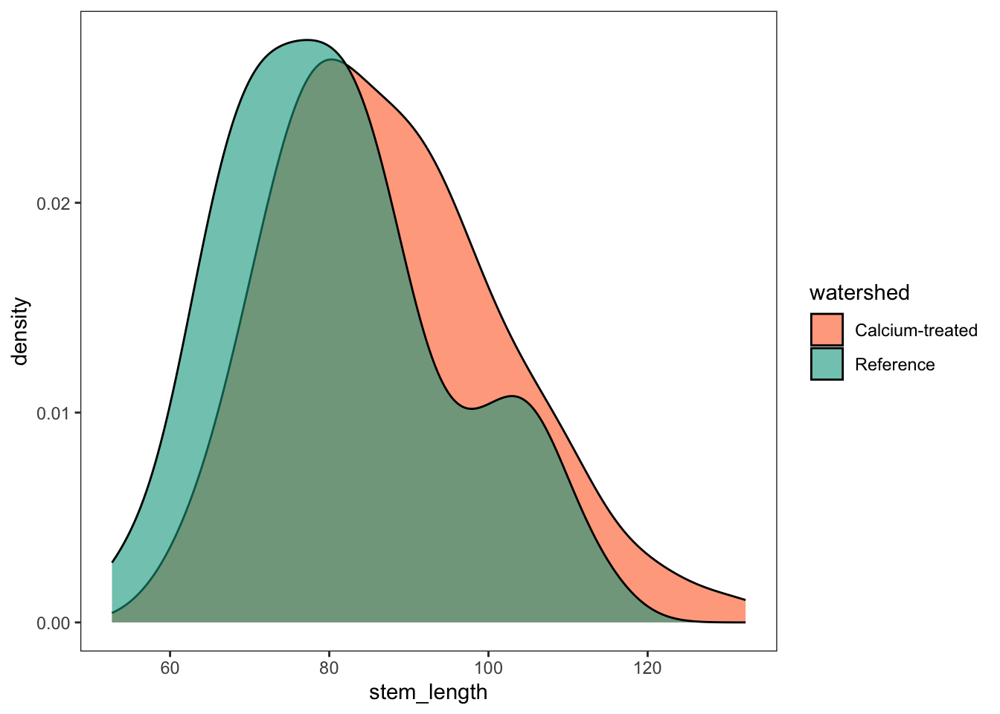
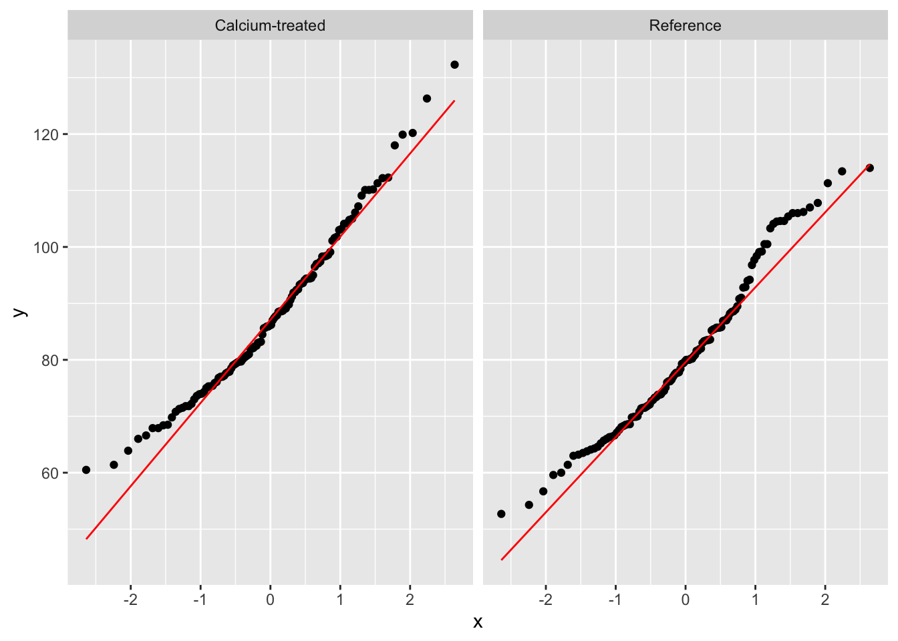
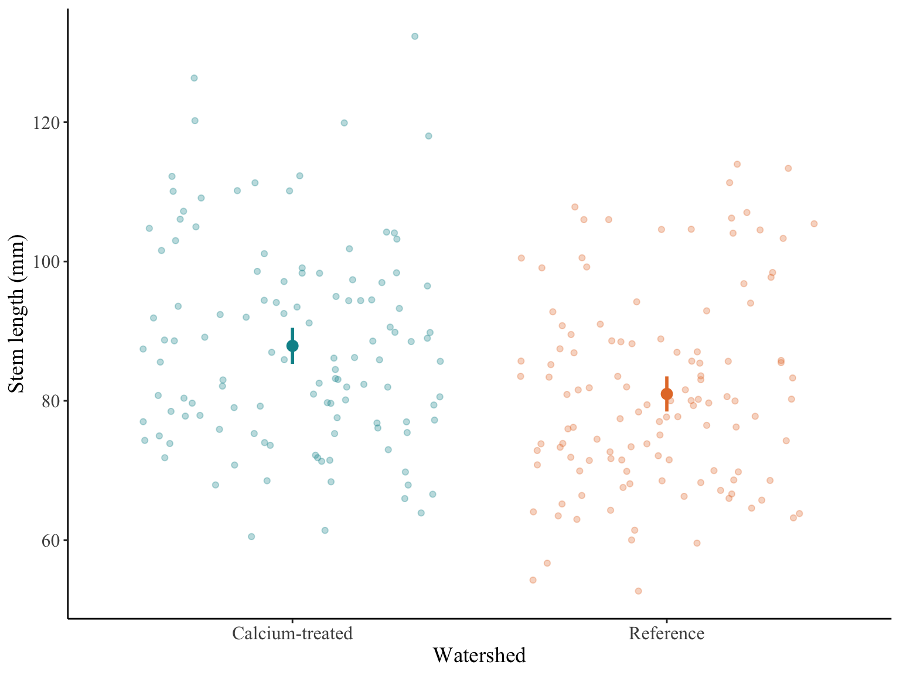

Code
library(tidyverse)
library(lterdatasampler)April 26, 2023
What is the first step to working with data?
tibble [359 × 11] (S3: tbl_df/tbl/data.frame)
$ year : num [1:359] 2003 2003 2003 2003 2003 ...
$ watershed : Factor w/ 2 levels "Reference","W1": 1 1 1 1 1 1 1 1 1 1 ...
$ elevation : Factor w/ 2 levels "Low","Mid": 1 1 1 1 1 1 1 1 1 1 ...
$ transect : Factor w/ 12 levels "R1","R2","R3",..: 1 1 1 1 1 1 1 1 1 1 ...
$ sample : Factor w/ 20 levels "1","2","3","4",..: 1 2 3 4 5 6 7 8 9 10 ...
$ stem_length : num [1:359] 86.9 114 83.5 68.1 72.1 77.7 85.5 81.6 92.9 59.6 ...
$ leaf1area : num [1:359] 13.84 14.57 12.45 9.97 6.84 ...
$ leaf2area : num [1:359] 12.13 15.27 9.73 10.07 5.48 ...
$ leaf_dry_mass : num [1:359] 0.0453 0.0476 0.0423 0.0397 0.0204 0.0317 0.0382 0.0179 0.0286 0.0125 ...
$ stem_dry_mass : num [1:359] 0.03 0.0338 0.0248 0.0194 0.018 0.0246 0.0316 0.015 0.0291 0.0149 ...
$ corrected_leaf_area: num [1:359] 29.1 33 25.3 23.2 15.5 ...Are there any missing observations?
Use install.packages("naniar") in the console before running the chunk below.
# A tibble: 5 × 11
year watershed elevation transect sample stem_length leaf1area leaf2area
<dbl> <chr> <fct> <fct> <fct> <dbl> <dbl> <dbl>
1 2003 Reference Low R1 1 86.9 13.8 12.1
2 2003 Reference Low R1 2 114 14.6 15.3
3 2003 Reference Low R1 3 83.5 12.5 9.73
4 2003 Reference Low R1 4 68.1 9.97 10.1
5 2003 Reference Low R1 5 72.1 6.84 5.48
# ℹ 3 more variables: leaf_dry_mass <dbl>, stem_dry_mass <dbl>,
# corrected_leaf_area <dbl>Remember, we’re interested in stem lengths in 2003 between reference and calcium-treated watersheds. What groups would be useful if that was the case?
# A tibble: 2 × 7
watershed mean_l sd_l var_l count_l se_l margin_l
<chr> <dbl> <dbl> <dbl> <int> <dbl> <dbl>
1 Calcium-treated 87.9 14.3 206. 120 1.31 2.59
2 Reference 81.0 13.9 194. 120 1.27 2.52ggplot(data = maples_2003) +
geom_histogram(aes(x = stem_length, fill = watershed), alpha = 0.6, color = "black", position = "identity",
bins = 16) +
scale_fill_manual(values = c("Calcium-treated" = "#FF6B2B", "Reference" = "#00A38D")) +
scale_y_continuous(expand = c(0, 0), limits = c(0, 22)) +
labs(x = "Stem length",
y = "Count") +
theme_bw() +
theme(panel.grid = element_blank())


With an F-test, you can ask: are the sample variances between my two groups equal?
The assumption is that your data are normally distributed.
\[ H0: s^2_1 = s^2_2 H1: s^2_1 \neq s^2_2 \]
F test to compare two variances
data: stem_length by watershed
F = 1.0587, num df = 119, denom df = 119, p-value = 0.7563
alternative hypothesis: true ratio of variances is not equal to 1
95 percent confidence interval:
0.7378244 1.5190473
sample estimates:
ratio of variances
1.058674 Two-tailed with significance level \(\alpha\) = 0.05:
If your test statistic is less than -1.98 or greater than 1.98, then you have evidence to reject the null hypothesis.
Two Sample t-test
data: stem_length by watershed
t = 3.7797, df = 238, p-value = 0.0001985
alternative hypothesis: true difference in means between group Calcium-treated and group Reference is not equal to 0
95 percent confidence interval:
3.304134 10.497532
sample estimates:
mean in group Calcium-treated mean in group Reference
87.88583 80.98500 Cohen’s d is a measure of how many standard deviations apart the two sample means are.
\[ Cohen's d = \frac{\bar{x_1} - \bar{x_2}}{\sqrt{(s^2_1 + s^2_2)/2}} \]
Note that you are using sample means in the numerator and sample variances in the denominator.
We can calculate this by hand (use install.packages("data.table") in the console before running the chunk below):
library(data.table)
# create a data frame in data table format from lengths_2003_summary
lengths_dt <- setDT(lengths_2003_summary)
# pull out mean and variance values from the data table
mean_ref_2003 <- lengths_dt[watershed == "Reference", mean_l]
mean_w1_2003 <- lengths_dt[watershed == "Calcium-treated", mean_l]
var_ref_2003 <- lengths_dt[watershed == "Reference", var_l] * 3
var_w1_2003 <- lengths_dt[watershed == "Calcium-treated", var_l] * 3
me_ref_2003 <- lengths_dt[watershed == "Reference", margin_l]
me_w1_2003 <- lengths_dt[watershed == "Calcium-treated", margin_l]
n_ref_2003 <- lengths_dt[watershed == "Reference", count_l] * 10
n_w1_2003 <- lengths_dt[watershed == "Calcium-treated", count_l] * 10
# calculate Cohen's d
d_byhand <- (mean_w1_2003 - mean_ref_2003) / sqrt((var_w1_2003 + var_ref_2003)/2)
d_byhand[1] 0.2817237[1] 4.939868[1] 8.861799Or using a function in a package:
Use install.packages("effsize") in the console before running the chunk below.
Compare the two calculations:
ggplot(data = lengths_2003_summary, aes(x = watershed, y = mean_l, color = watershed)) +
geom_point(size = 3) +
geom_linerange(aes(ymin = mean_l - margin_l, ymax = mean_l + margin_l), linewidth = 1) +
geom_jitter(data = maples_2003, aes(x = watershed, y = stem_length), alpha = 0.3) +
scale_color_manual(values = c("Reference" = "#E57B33", "Calcium-treated" = "#039199")) +
labs(x = "Watershed", y = "Stem length (mm)") +
theme_classic() +
theme(legend.position = "none",
text = element_text(family = "Times New Roman"),
axis.title = element_text(size = 14),
axis.text = element_text(size = 12),
plot.caption = element_text(hjust = 0),
plot.caption.position = "plot",
plot.title.position = "plot")
Figure 1. Sugar maple stem lengths in calcium-treated and reference watersheds. Stem lengths (mm) for calcium-treated (turquoise) and reference (orange) watersheds from Hubbard Brook Long-term Ecological Research site (HBR LTER). Dark points represent mean stem length and vertical lines represent confidence intervals with a 95% confidence level. Transparent points represent stem lengths.
There is a moderate (Cohen’s d = 0.49) but significant effect of calcium treatment on sugar maple stem lengths (Student’s t-test, t(238) = 3.78, p < 0.001, \(\alpha\) = 0.05). On average, sugar maple stem lengths in calcium-treated watersheds were 6.9 mm longer than those in reference watersheds (95% confidence interval: [3.3, 10.5] mm, Figure 1).
When rendering your document, compare the text above with the text below. Are there any differences?
There is a moderate (Cohen’s d = 0.49) but significant effect of calcium treatment on sugar maple stem lengths (Student’s t-test, t(238) = 3.8, p < 0.001, \(\alpha\) = 0.05). On average, sugar maple stem lengths in calcium-treated watersheds were 6.9 mm longer than those in reference watersheds (CI = [3.3, 10.5] mm, Figure 1).
@online{bui2023,
author = {Bui, An},
title = {Coding Workshop: {Week} 4},
date = {2023-04-26},
url = {https://an-bui.github.io/ES-193DS-W23/workshop/workshop-04_2023-04-26.html},
langid = {en}
}